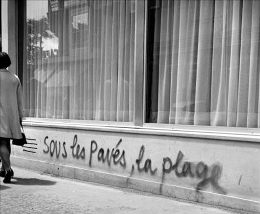

(Note: even though this text is presented here as abridged, it is still quite long. This is because the text is brilliant … read it slowly and carefully.)
Communism is not a programme one puts into practice or makes others put into practice, but a social movement. Apart from perhaps a clearer understanding, those who develop and defend theoretical communism are moved by the same practical personal need for communism as those who are not especially concerned by theory. They have no privilege whatsoever: they do not carry the knowledge that will set the revolution in motion. On the other hand, they have no fear of taking initiatives. Like every other revolution, the communist revolution is the product of real living conditions and desires. The points made in this text are born out of social contradictions and practical struggles which help us discern the possibilities of a new society amidst and against the monstrosity and fascination of the old.
Communism is not an ideal to be realised: it already exists, not as alternative lifestyles, autonomous zones or counter-communities that would grow within this society and ultimately change it into another one, but as an effort, a task to prepare for. It is the movement which tries to abolish the conditions of life determined by wage-labour, and it will abolish them only by revolution.
We will not refute the CPs, the various brands of socialists, the far left, etc., whose programmes call for a modernisation and democratisation of all existing features of the present world. The point is not that these programmes do not go far enough, but that they stay within the boundaries of the present society: they are capitalist programmes.
If one looks at modern society, it is obvious that in order to live, the great majority of people are forced to sell their labour power. All the physical and intellectual capacities existing in human beings, in their personalities, which must be set in motion to produce useful things, can only be used if they are sold in exchange for wages. Labour power is usually perceived as a commodity bought and sold nearly like all others. The existence of exchange and wage-labour seems normal, inevitable. Yet the introduction of wage-labour involved conflict, resistance, and bloodshed. The separation of the worker from the means of production, now an accepted fact of life, took a long time and was accomplished by force.
[…] By means of its school system and its ideological and political life, contemporary society hides the past and present violence on which this situation rests. It conceals both its origin and the mechanism which enables it to function. Everything appears as a free contract in which the individual, as a seller of labour power, encounters the factory, the shop or the office. The existence of the commodity seems to be an obvious and natural phenomenon, and the periodic major and minor disasters it causes are often regarded as quasi-natural calamities. Goods are destroyed to maintain their prices, existing capacities are left to rot, while elementary needs remain unfulfilled. Yet the main thing that the system hides is not the existence of exploitation or class (that is not too hard to see), nor its horrors (modern society is quite good at turning them into media show). It is not even that the wage labour/capital relationship causes unrest and rebellion (that also is fairly plain to see). The main thing it conceals is that insubordination and revolt could be large and deep enough to do away with this relationship and make another world possible.
What characterises human society is the fact that it produces and reproduces the material conditions of its existence. Other forms of life—bees, for example—make their own material conditions, but, at least as far as we can understand them, their evolution remains at a timeless standstill. Human activity is a continually changing appropriation and assimilation of man’s environment. In other words, humankind has a history. The relation of humans to “nature” is also a relation among humans and depends on their relations of production, just as the ideas they produce, the way they conceive the world, depend on their production relations.
Production relations into which people enter are independent of their will: each generation confronts technical and social conditions left by previous generations. But it can alter them. What we call “history” is made by people. This is not to say that the windmill created the feudal lord, the steam engine the bourgeois industrialist and that, in due time, with the same implacable logic, automation and electronics will free the toiling masses. If this were true, there would be no revolutions. The new society bred by the old can only emerge through a violent decisive break through the entire social, political, and ideological structure.
[…] As far as anthropology is to be trusted, it seems that human beings first lived in relatively autonomous and scattered groups, in families (in the broadest sense: the family grouping all those of the same blood), in clans or tribes. Production consisted essentially of hunting, fishing, and gathering. There was no individual production, as the individual did not exist, nor freedom as we are used to it. Activities were decided (actually imposed on the group by the group) and achieved in common, and their results shared in common. Not everyone got a “fair” share, but “production” and “consumption” took place without the mediation of comparing separately produced goods.
Many a “primitive” community had the “technical” means to accumulate surpluses and simply did not bother. As M. Sahlins pointed out, the age of scarcity often meant abundance, with lots of idle time—though our “time” would have had little relevance to these people. (Marshall Sahlins, “The Original Affluent Society”, 1972) As the West explored and conquered the world, travellers and anthropologists observed that searching for and storing food took a rather small portion of a “primitive’s” day. After calculating that in just one hour, in the eighteenth century, an English farmer produced 2,600 calories and some Indonesians 4,500, Gregory Clark draws a parallel with hunter-gatherers who only “worked” a few hours a day: “Thus the average person in the world of 1800 was no better off than the person of 100,000 BC.” (Gregory Clark, A Farewell to Alms, 2008) Quite a striking comparison, but is it relevant to use the same notion, work, for a Papuan hunter-gatherer and a Yorkshire rural day-labourer? Clark has the mindset of an economist. The main point is that primitive “productive” activity was part of a global relationship with the group and its environment.
Eventually, not all but most of humankind moved from hunting-gathering into agriculture and ended up developing surpluses, which communities started swapping.
This circulation was achieved by taking into account what is common to all goods. The products of human activity have this one thing in common: every one of them results from a certain amount of exertion of physical and mental effort. Labour has an abstract character: it does not only produce a useful thing, it also consumes energy, both individual and social. The value of a product, independently of its use, is the quantity of abstract labour it contains, i.e. the quantity of social energy necessary to reproduce it. Since this quantity can only be measured in terms of the time spent, the value of a product is the time socially necessary to produce it, namely the average for a given society at a given moment in its history.
With the growth of its activities and needs, the community came to produce not only goods, but also commodities, goods produced to be exchanged, and for their exchange value. Commerce first appeared between communities, then penetrated inside communities, giving rise to specialised activities, trades, socially divided labour. The very nature of labour changed. Productive activity was no longer integrated into the totality of social activity: it became a specialised field, separated from the rest of the individual’s life. What somebody makes for himself is set apart from what he makes for the purpose of exchange. The second part of his activity means sacrifice, time-counting, working hours as opposed to free time, and constraint: society becomes not just diversified into different trades, it is divided between workers and non-workers. Work is class.
Exchange relations help the community to develop and to satisfy its growing needs, but they ultimately destroy what made the community immediately communal. People now treat each other, and themselves, mainly as suppliers of goods. The utility of the product I make for exchange no longer interests me: I am only interested in the utility of the product I will get in exchange. But for the person who sells it to me, this second utility does not matter: his sole concern lies in the usefulness of what I produced. What is use value for the one is only exchange value for the other, and vice versa.
[…] Value was not born because it is a convenient instrument of measure. It appeared as an indispensable mediation of human activities because these activities were separated and had to be linked by some means of comparison. Labour became work, viz. a physical or mental effort meant to be as productive as possible, not in the interest of the worker, but for the benefit of the one who was putting him to work and profiting from it. It is not technique we are talking about, but social division: class. Work is inseparable from the fact that a group has no other way of subsistence than working for a group who controls the means of production.

Up to our time included (so far), with the advance of the efficiency of human organisation and its capacity to associate the components of the labour process, first of all labour power, history has coincided with the difference (and the opposition) between those who work and those who organise work and profit from it. The first towns and great irrigation projects were born out of an increased productive efficiency. Commerce appeared as a special activity: some people do not make a living by producing, but by mediating between the various activities of the separate units of production. An increasing proportion of items, artefacts, places, ideas, emotions, souvenirs become commodities. To be used, to put into practice their ability to fulfil a need, they must be bought, they must fulfil their exchange value. Otherwise, although they exist materially, they do not exist socially, and no-one has a right to use them, because commodity is not just a thing, but first and foremost a social relation ruled by the logic of exchange. Use value is the support of value. Production becomes a sphere distinct from consumption, and work a sphere distinct from non-work. Private property is the legal framework of the separation between activities, between men, between units of production. The slave is a commodity for his owner, who buys a man to work for him, whereas the wage-labourer is his own private proprietor, legally free to choose who to work for, at least in principle and in democratic capitalism.
[…] Only capitalism created, from the sixteenth century on, but mainly in the nineteenth and twentieth centuries, the necessary basis for a durable world-unified economy, when the Industrial Revolution turned labour itself into the Number One commodity.
[…] The point is not that a handful of people take a disproportionately large share of surplus-value. If these parasitic profiteers were pushed aside, while the rest of the system remained, part of the surplus-value would be given to the workers and the rest invested in collective and social equipment, welfare, etc.: this is the age-old programme of the left, including the official CPs. Unfortunately, the logic of the value system involves developing production for maximal valorisation. In a society based on value, value dominates society, not the other way round. The change brought about by capital is to have conquered production, and thus to have socialised the world since the nineteenth century, spreading industrial plants, warehouses, ports, telecommunication networks, etc., all over the world, which results in goods being available in shops. But in the capitalist cycle, the fulfilment of needs is only a by-product, never the driving force of the mechanism. Valorisation is the aim: fulfilment of needs is at best a means, since what has been produced must be sold. Even if it was feasible, labour-managed value would still operate according to valorisation. The bourgeois hardly control value: “people’s power” would not fare any better.
The company is the locus of capitalism: each industrial, trading, or agricultural company operates as a rallying point for a quantum of value looking for expansion. The enterprise must make profits. Profitability has nothing to do with the evil doing of a few “big” capitalists, and communism does not mean getting rid of fat cigar smokers wearing top hats at horse shows. (Dauvé's note, 2015: Sorry for the old-fashioned cliché. Today’s bourgeoisie has been updated and even increasingly genderised: a woman became head of the IMF in 2011, another is currently Facebook’s COO, etc.) Old and new reformism always targets the rich, yet what matters is not individual profits, however outrageous they may be, but the constraint, the orientation imposed upon production and society by a system which dictates what and how to produce and to consume.
This is why it is so difficult to draw a line between speculative and productive investment. In capitalist logic, productive means value production, whether value comes out of a Wolfsburg assembly line or a Wall Street trader’s office. The aim of production is not to satisfy human wants, nor provide labour with jobs, nor to please the engineer’s inventive mind, but to accumulate value. […]
“It is important to emphasize the point that what determines value is not the time taken to produce a thing, but the minimum time it could possibly be produced in, and the minimum is ascertained by competition.” (Marx, Poverty of Philosophy, 1847)
Competition is the cornerstone of capitalism, the dynamic that makes it not only produce a lot more than other systems, but makes it the world-system where labour productivity is a priority. Each corporation meets its rivals on the market, each fights to corner the market.
Competition disjoints productive systems into autonomous centres which are rival poles, each seeking to increase its respective sum of value, which exists against the others. Soft and “fair” competition is not uncommon, but any firm will resort to cut-throat methods if it has to. Neither “corporate governance,” nor “ethical guidelines,” nor “democratic planning” can pacify economic warfare. The motive force of competition is not the freedom of individuals, nor even of the capitalists, but the freedom of capital: it lives by devouring itself. The form destroys its content to survive as a form. It destroys its material components (living labour and past labour) to survive as a sum of value valorising itself.
[…] Each competing capital has a specific profit rate. But capitals move from one branch to another, looking for the best possible profit opportunity, for the most rewarding sector or niche. When this sector is saturated with capital, its profitability decreases and capitals are eventually transferred to another one. When CDs won the day, very few record companies kept mass-manufacturing vinyl. This unceasing dynamic process is modified, but not abolished, by the establishment of monopolies and oligopolies, which play a permanent war and peace game between themselves.
“Social Darwinism” expresses a world where one has to battle to sell and to sell oneself. Economic violence is complemented by armed State violence. Capitalist built-in tendencies combine with “push” political factors to make the world safe for war, and the social system that prides itself on its pacifying features makes us live between one impending conflict and the next. […]
[…] We do not live simply in a world of commodities, but in a capitalist world which “presents itself as an immense accumulation of commodities,” as written in Das Kapital’s first sentence. Capitalist crises are more than commodity crises: they link production to value in such a way that production is governed by value, as shown by comparing them with precapitalist crises.
Until the nineteenth century, a bad grain harvest would cause a decrease of agricultural production. The peasants bought fewer manufactured goods such as clothing or equipment, and industry found itself in trouble. Merchants speculated on corn and kept it in storage to drive prices up. Eventually there were famines here and there. The very existence of commodities and money is the condition for crises: there is a separation (materialised in time) between the two operations of buying and selling. From the standpoint of the merchant trying to increase his wealth, buying and selling corn are two distinct matters in time, the interval being determined by the amount and rate of his expected profit. In the interval between production and consumption, people starved: during the Irish famine of the 1840s, one million died while Ireland was a food net exporter. The mercantile system only acted as an aggravating circumstance in a crisis caused by climatic factors. The social context was pre-capitalist, or that of a weak capitalism, as in present-day China and Russia where bad harvests still have devastating effects on the economy and the people.
Capitalist crisis, on the other hand, is the product of the forced union of value and production. Take a car maker. Competition forces him to raise productivity and get a maximum value output through a minimal input (cheapest possible raw materials, machinery, and labour). A crisis arises when accumulation does not go with a sufficient decrease in the costs of production. Thousands of cars may come off the assembly line every day, and even find buyers, but manufacturing and selling them does not valorise this capital enough compared to other car makers. So the company streamlines production, invests more, makes up profit loss with the number of cars sold, resorts to credit, mergers, government subsidies or tariffs, etc., eventually produces as if demand was to expand for ever, and loses more and more. Crises lie neither in the exhaustion of markets, nor in overgenerous pay rises, but in falling profits (to which workers’ militancy contribute): as a sum of value, capital finds it increasingly hard to valorise itself at a socially acceptable rate.
Pre-capitalist crises originated from an unavoidable reality (wet winter and freezing, for instance) which mercantile relations only made worse. Modern crises have no such natural origin: their cause is social. […]
Any revolution originates in material living conditions which have become unbearable. This also applies to the proletariat.
If one identifies proletarian with factory worker (or with manual labourer), or with the poor, one misses what is subversive in the proletarian condition. The proletariat is the negation of this society. It is not the collection of the poor, but of those who are dispossessed, “without reserves,” (Dauvé's note: The concept of “those who have no reserves” was formulated by Amadeo Bordiga in the years following World War II. Bordiga’s purpose was not to create a new definition of the proletariat, but to go back to the general definition.) who are nothing, have nothing to lose but their chains, and cannot liberate themselves without destroying the whole social order. The proletariat is the dissolution of present society, because this society deprives the proletarians of nearly all its positive aspects: the proles only get their share of capitalist material, mental, and cultural wealth in its poorest aspects. All theories (bourgeois, fascist, Stalinist, Labourite, left-wing, or far-leftist) which somehow glorify and praise the proletariat as it is and claim for it the positive role of defending values and regenerating society, are anti-revolutionary. Enlightened bourgeois even admit the existence of class struggle, providing it never ends, in a self-perpetuating bargaining game between labour and capital, where the proletariat is reduced to the status of an element of capital, an indispensable wheel within an inevitable mechanism. The bourgeois does not mind the worker as long as he remains a partner.
Defining the proletariat has something but little to do with sociology. Indeed, most proles are low paid, and a lot work in production, yet their existence as proletarians derives not from being low-paid producers, but from being “cut off,” alienated, with no control either over their lives or the outcome and meaning of what they have to do to earn a living. The proletariat therefore includes the unemployed and many housewives, since capitalism hires and fires the former, and utilises the labour of the latter to increase the total mass of extracted value. The proletariat is what reproduces value and can do away with a world based on value. Without the possibility of communism, theories of “the proletariat” would be tantamount to metaphysics. Our only vindication is that whenever it autonomously interrupted the running of society, the proletariat has repeatedly acted as negation of the existing order of things, has offered it no positive values or role, and has groped for something else.
The bourgeoisie, on the other hand, are ruling class not because they’re rich and the rest of the population aren’t. Being bourgeois brings them riches, not the other way round. They are ruling class because they control the economy—employees as well as machines. Individual ownership strictly speaking is only a form of class domination in particular variants of capitalism. Private property did not exist in State capitalism: the bureaucratic ruling class collectively owned the means of production.
Communist theory is not worker-centred or workplace-centred: it does not eulogise the working class, nor regards manual work as infinite bliss. It gives productive workers a decisive (but not exclusive) part because their place in production puts them in a better situation to revolutionise it. Only in this sense do “blue collar” (man and woman) workers keep a central role as initiators and precipitants, in so far as their social function enables them to carry out different tasks from others in an insurrection. Yet with the spread of unemployment, casual labour, longer schooling, training periods at any time of life, temp and part-time jobs, forced early retirement, and the odd mixture of welfare and workfare whereby people move out of misery into work and then again into poverty and moonlighting, when dole money sometimes equals low pay, it is getting harder to tell work from non-work.
[…the proletariat is…] a class with radical chains, a class of civil society which is not a class of civil society, an estate which is the dissolution of all estates, a sphere which has a universal character by its universal suffering and claims no particular right because no particular wrong, but wrong generally, is perpetuated against it; which can invoke no historical, but only human, title; … a sphere, finally, which cannot emancipate itself without emancipating itself from all other spheres of society and thereby emancipating all other spheres of society, which, in a word, is the complete loss of man and hence can win itself only through the complete re-winning of man. (Marx, A Contribution to the Critique of Hegel’s Philosophy of Right: Introduction, 1843.)
Of all the classes that stand face to face with the bourgeoisie today, the proletariat alone is a really revolutionary class. The other classes decay and finally disappear in the face of modern industry; the proletariat is its special and essential product. (Marx, Communist Manifesto, chap. I)
If these two quotes do not contradict each other, the emphasis is undoubtedly different. The 1843 “radical humanist” or “universal class” approach morphed four or five years later into the “class analysis” of the Communist Manifesto. These quotes are but two among many, and not just in Marx’s time: such theoretical ambiguity reflects the practical contradiction that the proletariat actually is:
If it was above all working class, how could it abolish work? How could a class primarily fighting another class (the bourgeois) defeat its enemy and at the same time get rid of all classes?
For the dispossessed masses, the capitalist socialisation of the world creates an entirely new reality. Unlike the slaves, serfs, or craftsmen of the past, the wage-labour (often wage-less, as we said) “immense majority” is potentially unified for collective action capable of overthrowing capitalism and creating a cooperative social life. Such is the crux of communist theory.
What Marx called capitalism’s “historical role” was to create conditions which enable human beings (providing they make a revolution to that effect) to do without mediations that up to now have organised and imprisoned them. Value is one of those mediations: it materialises the social character of human activity. Value, concretised in money in all its forms, from the simplest (small change in your pocket) to the most sophisticated (credit lines on a trader’s computer screen), results from the general character of labour, from the individual and social energy produced and consumed by labour. We can now dispense with an element external to social activities yet (up to now) necessary to connect and stimulate them. Communism does not reduce the components of social life to a common denominator (the average labour time contained in them): it compares utility to decide what to do and what to produce. Its material life is based on the confrontation and interplay of needs—which does not exclude conflicts and possibly some form of violence. Human beings will never be selfless angels, and why should they?
We can only approach social reality with words inherited from a few millennia of exploitation and deprivation. When we speak of needs, the term immediately conveys the idea of a lack, an absence, a deficiency. “Need” is what one wants but does not have, whether it is something obviously vital (food for the hungry) or deemed superfluous (a designer suit). It refers to an object or service as separate from me as production is cut off from consumption. Need is rarely understood as social, as something positive that connects me with others, me with the rest of the world, and me with the fulfilment of the need. Except if I am starving, my satisfaction in eating includes the fact that I have been longing for food. Providing one does not wait in vain, pleasure lies also in the waiting.
The natural urge to grow food, potatoes for instance, will be met through the birth of social links which will also result in vegetable gardening. The question is not how to grow potatoes because we have to eat. Rather, it is to imagine and invent a way to meet, to get and be together, that will include vegetable gardening and be productive of potatoes. Maybe potato growing will require more time than under capitalism, but that possibility will not be evaluated in terms of labour-time cost and saving.
Communism is not an entirely different economy: it is the end of the economy as a separate and privileged domain on which everything else depends, and where work is—like money—the source of a universal love-hate relationship. Humankind produces and reproduces its conditions of existence. Ever since the disintegration of primitive communities, but in an extreme form under capitalism, the activity through which man appropriates his environment has taken the form of work—both an obligation and a compulsion. On the one hand, it is a curse, a constraint opposed to leisure and “true” enjoyable life. On the other, it is so pervasive that it often pre-empts the worker’s capability for other activity outside working hours, and many proletarians feel at a loss in their “free time,” or when they retire. Work is a blessing and a curse. With capital, production, i.e. production for valorisation, has become our master. It is a dictatorship of production relations over society. When one produces, one sacrifices one’s life-time in order to enjoy life afterwards; this enjoyment is disconnected from the actual content of the work, which is a means of supporting one’s life (workaholics are more numerous among taxation experts than street cleaners).
Communism dissolves production relations as separate and re-integrates them within the whole of social relations. The obligation of doing the same work for a lifetime, of being a manual or an intellectual worker, or of forced multi-tasking, disappears. Communism supports neither play against work, nor non-work against work. These limited and partial notions are capitalist mutilated realities. Activity as the production-reproduction of the conditions of life (material, affective, cultural, etc.) is the very nature of humanity, bearing in mind that “production” is a lot more than object-making: for instance, travelling produces ideas and experiences which transform people and contribute to inventions and new activities.
Some tasks will be taken in charge by everyone, and we can trust human inventiveness to come up with a wealth of new occupations. Automation probably will help. But believing in automation as the solution to the age-old malediction of work would be trying to address a social issue by technical means (actually, this is what capitalism pretends to be doing).
First, fully automated production (including huge computer networks) requires so much raw material and energy that overextending it would be wasting even more resources than contemporary industry does.
Secondly and more importantly, the human species collectively creates and transforms the means of its existence. If we received them from machines, we would be reduced to the status of a young child who is given toys without knowing where they come from: their manufactured origin does not even exist for him.
Neither does communism turn production into something perpetually pleasant and playful. Human life is effort and pleasure. Poetry-writing involves stress and pain. Learning another language implies a degree of exertion. Lots of things can be boring at times, vegetable gardening no exception, and communism will never fully abolish the difference between effort and enjoyment, creation and recreation. The all-leisure society and the push-button factory are capitalist utopias.
In Marx’s time and until much later, communist revolution was conceived as if its material preconditions were still to be created all over the world, and not just in “backward” countries like Russia or China: in the industrialised West as well. Nearly all Marxists—and a few anarchists—believed that when it took power, the working class would have to further develop the economy, in a different way from the bourgeois of course: it would reorient production in the interests of the masses, put the petit-bourgeois to work and generalise factory-type labour. In the best of schemes, this went along with worker management, equal pay and substantial reduction of working hours. But revolution did not come, and its German stronghold was crushed. Since then, such a programme has been fulfilled—over-fulfilled—by capitalist economic growth. The material basis of communism now exists. There is no longer any need to pack off clerks and shop-assistants to the shop floor, to turn white into blue collar: our problem will be to create a totally different “industry”… and to close quite a few factories. Compulsory labour is out of the question: what we want is the abolition of work as such, as an activity separate from the rest of life. For example, putting an end to garbage collection as a job some have to do for years, will be a lot more than job rotation: it will imply changes in the process and logic of garbage creation and disposal.
Underdeveloped countries—to use a capitalist phrase—will not have to go through industrialisation. In many parts of Asia, Africa, and Latin America, capital oppresses labour but has not subjugated it to what Marx called “real” submission: it dominates societies which it has not yet fully turned into money and wage-labour relationships. Old forms of social communal life still exist. Communism would regenerate a lot of them—as Marx expected the Russian peasant commune might do—with the help of some “Western” technology applied in a different way:
If revolution comes at the opportune moment, if it concentrates all its forces so as to allow the rural commune full scope, the latter will soon develop as an element of regeneration in Russian society and an element of superiority over the countries enslaved by the capitalist system. (Marx’s letter to Vera Zasulich, first draft, April 1881)
In many respects, “backward” areas may prove easier to communise than huge motorcar-adapted and screen-addicted “civilised” conurbations.
To pre-empt glib critique, let us add that communisation is of course not instantaneous: its effects will take time, at least a generation. But it will be immediate: it will proceed without the mediation of a “transition period” which would be neither capitalist nor non-capitalist. The process of living without value, work, and wage-labour will start in the early insurrectionary days, and then extend in depth and scope.

Communism is mankind’s appropriation of its wealth, and implies an inevitable and complete transformation of this wealth. It is not a continuation of capitalism in a more rational, more efficient, and less unequal, less uncontrolled form. It does not take over the old material bases as it finds them: it overthrows them. We will not get rid of the “bad” side of capital (valorisation) while keeping the “good” side (production). Capital accumulates value and fixes it in the form of stored labour, past labour: nearly all present workplaces are geared to labour productivity and labour submission. (Most buildings too, schools particularly.) Communist revolution is a dis-accumulation. Communism is opposed to productivism, and equally to the illusion of sustainable development within the existing economic framework. The official spokespersons of ecology never voice a critique of the economy as value-measuring, they just want to keep money under control. Economy and ecology are incompatible.
[…] Some past proletarian movements were able to bring society to a standstill, and waited for something to come out of this universal stoppage. Communisation, on the contrary, will circulate goods without money, open the gate isolating a factory from its neighbourhood, close down another factory where the work process is too alienating to be technically improved, put an end to battery farming, do away with school as a specialised place which cuts off learning from doing for fifteen-odd years, pull down walls that force people to imprison themselves in three-room family units—in short, it will tend to break partitions. Eventually, communism will not even know what value was.
Insurrection implies carrying out a historical mutation in the way we live, which includes how and what we produce. In the shifting sands of troubled times, the outcome is unpredictable, but the insurgents’ ability to confront police and army guns and armoured cars will depend on the social content of their endeavour. To neutralise and overcome their enemies, the proletarians’ main propelling force will be their communising ability.
[…] Insurrection cleaves the normal course of events and opens up make-or-break times. Up to now, insurgents have hardly ever reached the tipping point where creating an altogether new society could coincide with a corresponding armed action. In its culminating moments, for instance in Germany between 1919 and 1921, the proletariat never reached a communisation stage. Whereas the bourgeoisie resorted to its “natural” weapon—the economy—by dividing the working class through unemployment, the proletariat was unable to reply on the same scale by means of its blocking power over society. Though it went as far as to create a Red Army in the Ruhr in 1920, its military “offensive” remained socially defensive: the insurgents did not transform what they had taken control of. They did not raise the stakes by using the destructive-constructive “weapon” which their social function gives them.
In a very different context, when some riots in the United States re-appropriated goods, they remained on the level of consumption and distribution. Rioters were attacking commodity, not capital. Communisation will deal with the heart of the matter: value production. But the insurgents will only use this instrument if they transform it at the same time. Such a process can only take place on a worldwide scale, and first of all in several countries where social contradictions are more acute, which means communisation is more likely to be initiated in Western Europe, North America, and Japan.
The question is not the seizure of power by the workers. It is absurd to advocate the rule of the working class as it is now: a partner in the valorisation mechanism, and a subjected partner. Under the dominion of wage-labour and company, worker management is just capable of moderating the dictates of capital. The dictatorship of the existing working class cannot be anything but the dictatorship of its representatives, i.e. the leaders of the unions and workers’ parties. This is the programme of the democratic left.
Theories of “workers’ government” or “workers’ power” only propose alternative solutions to the crisis of capital. Revolution transforms society, i.e. relations among people, and between people and their means of life. Organisational problems and “leaders” are secondary: they depend on what the revolution achieves. This applies as much to the start of the communist revolution as to the functioning of the society which arises out of it. Revolution will not happen on the day when 51 percent of the workers become revolutionary; and it will not begin by setting up a decision-making apparatus. Management and leadership dilemma are typical capitalist obsessions. The organisational form of the communist revolution, as of any social movement, hinges on its substance and development. The way revolution gets organised, constitutes itself and acts, results from the tasks it performs.
Marx’s early works suggested a critique of politics, and opposed “political” to “social” revolution: the former rearranges links between individuals and groups without much change in what they actually do; the latter acts upon how people reproduce their means of existence, their way of life, their real condition, at the same time transforming how they relate to each other.
One of our first spontaneous rebellious gestures is to revolt against control over our lives from above, by a teacher, a boss, a policeman, a social worker, a union leader, a statesman… Then politics walks in and reduces aspirations and desires to a problem of power—be it handed to a party, or shared by everyone. But what we really lack is the power to produce our life. A world where all electricity comes to us from mammoth (coal, fuel-oil, or nuclear) power stations, will always remain out of our reach. Only the political mind thinks revolution is primarily a question of power seizure or redistribution.
Understanding this critique of politics is essential to grasp the issue of the State.
[…] the State was born out of human beings’ inability to manage their lives. It is the unity—symbolic and material—of the disunited: some social contract has to be agreed upon. As soon as proletarians start appropriating their means of existence, this mediation begins to lose its function, but destroying it is not an automatic process. It will not disappear little by little as the non-mercantile sphere gets bigger and bigger. Actually, such a sphere would be vulnerable if it let the central governmental machinery go on, as in Spain 1936–37. No State structure will wither away on its own.
Communising is therefore more than adding piecemeal actions. Capital will be sapped by general subversion through which people take their relationships with the world into their own hands. But nothing decisive will be achieved as long as the State retains its hold on the essential. Society is not simply a capillary network: relationships are centralised in a force which concentrates the power to preserve this society. Capitalism would be too happy to see us change our lives locally while it carries on globally. Because it is a central force, the State has to be demolished by central action. Because its power base is ubiquitous, it must be extinguished everywhere. Communisation will combine both dimensions… or fail. The communist movement is anti-political, not a-political.
Writing and reading about violence and even more so armed violence is easy, and carries the risk of mistaking the pen for a sword. All the same, no reflection on revolution can evade the issue. Our purpose is neither to prepare for a revamped Red Army, nor for worker militia modelled on the 1936 Spanish experience, where the participants received pay: traditional military they were not, yet like soldiers they were given money to live on. This alone showed the absence of communisation.
[…] Since the communisation of society would begin at once and gradually involve more and more people, its inevitable violence would be different from what Marx or Rosa Luxemburg could imagine. The proletarians will be able to make the bourgeoisie and the State, i.e. the political props of capitalist economy, utterly useless and ultimately defenceless, by undermining the sources of their power. The bourgeoisie is aware of it: modern States are steeling themselves for “low-intensity operations,” which imply a lot more than police work, and include population and resource control. Of course counter-revolution has never been only military and political, but its social dimension is now a condition of the rest. In 1972, though it dealt mostly with wars in the Third World, Michael Klare’s War Without End: American Planning for the Next Vietnams provided useful insights into the strategy of the big capitalist States preparing for civil war on their own soil. If we considered the problem from a purely material point of view, the State’s superiority would be outstanding: guns against tanks. Our hope resides in a subversion so general and yet so coherent that the State will be confronted by us everywhere, and its energy source depleted.
Communist revolution “destroys” less than it deprives counter-forces by draining them of their function. The Bolsheviks did the opposite: they got rid of the bourgeois, left the basics of capitalism survive, and ended up fulfilling the capitalist function in the place of the bourgeois. Lenin and his party started 1917 as political activists, became efficient soldiers, and after winning the war turned into managers.
On the contrary, as communisation is immediate (in the sense defined in the previous section), it does not separate ends from means: it does not aim at political power, for instance by creating a stronger military force than the State’s army: it aims at the power of transforming social relations, which include the self-transformation of the insurgents themselves.
Communism may be called “democratic” if democracy means that everyone has a say in the running of society, but this will not be so because of people’s ability and desire to manage society, or because we would all be educated enough to master the art of sound administration.
Our problem is not to find how to take truly common decisions about what we do, but to do what can be decided upon in common. A Taylorised factory will never come under the management of its personnel. Neither will a farm based on value productivity. A General Motors plant, a nuclear power station, Harvard University or the BBC will never operate democratically. A company or an institution run like a business accepts no leadership but that which allows it to valorise itself. The enterprise manages its managers, and capitalists are the officials of capital. The elimination of the limits of the company, the destruction of the commodity relation which compels every individual to treat others as a means to earn his living, here are the main conditions for self-organisation. Instead of making management a priority, communism will regard administration as an activity among others.
Democracy is a contradiction in terms, a lie and indeed sheer hypocrisy… This applies to all forms of government. Political freedom is a farce and the worst possible slavery; such a fictitious freedom is the worst enslavement. So is political equality: this is why democracy must be torn to pieces as well as any other form of government. Such a hypocritical form cannot go on. Its inherent contradiction must be exposed in broad daylight: either it means true slavery, which implies open despotism; or it means real freedom and real equality, which implies communism. (Engels, Progress of Social Reform on the Continent, 1843)
[…] To avoid discussing in the abstract, let us wonder if the democratic principle applies in social life. The 1986 French railway strike was to a large extent (at any rate, a lot more than is commonly the case) self-organised by the rank and file. At Paris-Nord, a train engine drivers’ meeting had just voted against blocking the tracks to prevent trains from running. Suddenly the strikers saw a train come out of the station, driven by middle managers under police protection: they rushed to the tracks to stop it, undoing by spontaneous action hours of democratic deliberation.
What does this (and hundreds of similar instances) prove? Certainly not that any rash initiative going against collective decision is positive. It simply reminds us that collective is not synonymous with what is usually often referred to as democracy: a deliberation process organised according to a set of pre-planned rules.
Communism is of course the movement of a vast majority at long last able to take actions into their own hands. To that extent, communism is “democratic,” but it does not uphold democracy as a principle. Politicians, bosses, and bureaucrats take advantage either of a minority or a majority when it suits them: so does the proletariat. Workers’ militancy often stems from a handful. Communism is neither the rule of the most numerous, nor of the wise few. To debate or start acting, people obviously have to gather somewhere, and such common ground has been called a soviet, committee, council, shura, etc. The means turns into an end, however, when the moment and machinery of decision-making prevail over action. This separation is the essence of parliamentarianism.
True, people must decide for themselves and, at some point or other, this requires a “discursive” time and space. But any decision, revolutionary or not, depends on what has happened before and what is still going on outside the formal deciding structure. Whoever organises the meeting sets the agenda; whoever asks the question determines the answer; whoever calls the vote often carries the decision. Revolution does not put forward a different form of organisation, but a different solution from that of capital and reformism. As principles, democracy and dictatorship are equally wrong: they isolate a special and seemingly privileged moment. Communism is neither democratic nor dictatorial.
The essence—and limit—of political thought is to wonder how to organise people’s lives, instead of considering first what those to-be-organised people do.
Communism is not a question of inventing the government or self-government best suited to the social reorganisation we want. It is not a matter of institutions, but of activity.
What members of society have in common or not depends on what they are doing together. When they lose mastery over the material basis of their conditions of existence, they lose their mastery over the running of their personal and group life.
In sum, communisation will deprioritise the power question, by stressing the nature of the change: revolution will be born out of a common refusal to submit, out of the hope of getting to a point of no return where people transform themselves and gain a sense of their own power as they transform reality.
The world of commodities and value is activated by us, yet it lives a life of its own, it has constituted itself into an autonomous force, and the world at large has to submit to its laws. Communism challenges this submission and has opposed it since the early days of capitalism, so far with no chance of success.
The communist revolution is the continuation as well as the surpassing of present social movements. Communism will grow out of struggles, out of real interest and desires which are now already trying to assert themselves, and cannot be satisfied because the present situation forbids it. Today numerous communist gestures and attitudes express more than a refusal of the present world: they express an attempt to get to a new one. Whenever they succeed, they are confined to a social fringe, and tolerated as long as they do not antagonise wage-labour and State: otherwise, they are “recuperated,” stifled or suppressed. Public opinion only sees their limits, only the tendency and not its possible development, and “extremism” or “alternativism” always present these limits as the true aims of the movement. In the refusal of assembly-line work, in the struggles of squatters, the communist perspective is present as the social energy spent to create “something else,” not to escape the modern world, but to transform it. In such conflicts people spontaneously try to appropriate goods, or even make goods and invent new types of goods, against the logic of value exchange, and this process helps the participants to change themselves in the event.
However, that “something else” is present only potentially in these actions, whatever the people involved think and want, and whatever activists and theorists may do and say. Communisation is not embryonic in any strike, riot, or looting, and trying to radicalise them is tantamount to trying to change something into what it cannot be now. The only possible “autonomous” spaces in this society are those allowed by capital and State, therefore politically harmless. When the social experimenter sneaks into the cracks of conformity, the crack closes in on him. Revolution is fun (besides being other things): not all fun is revolutionary. The course of history is neither piecemeal nor gradual: revolution is a cut, a break-through. “The gate is straight, deep and wide,” but we still have to cross the gate to get to the other side.
Source